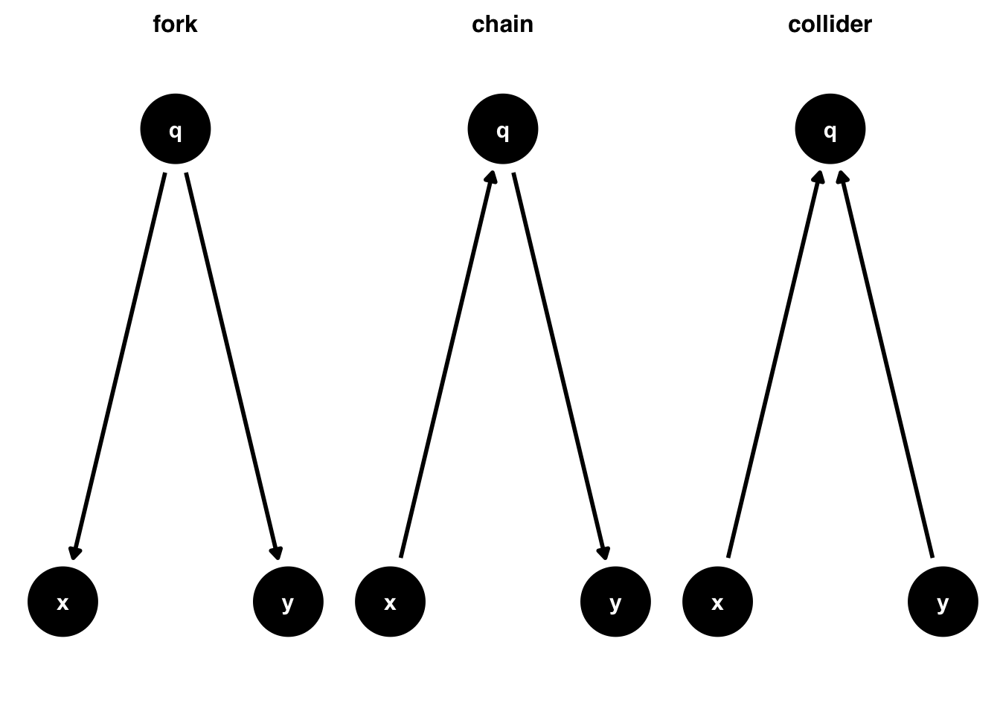
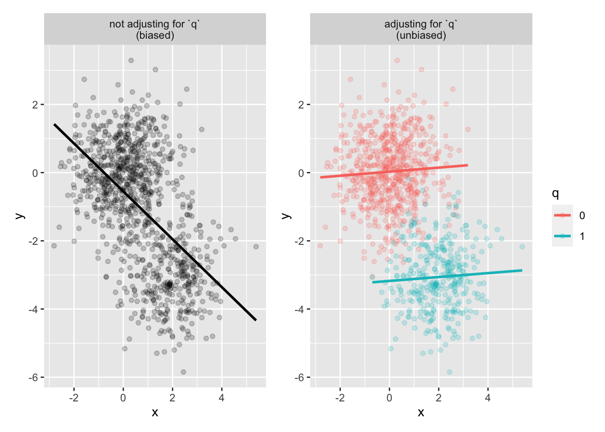
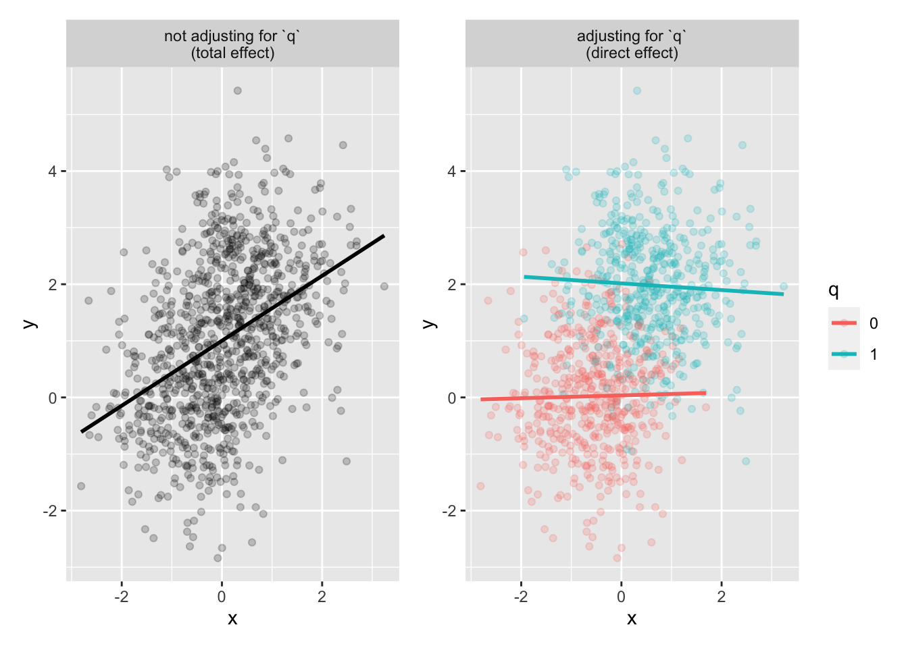
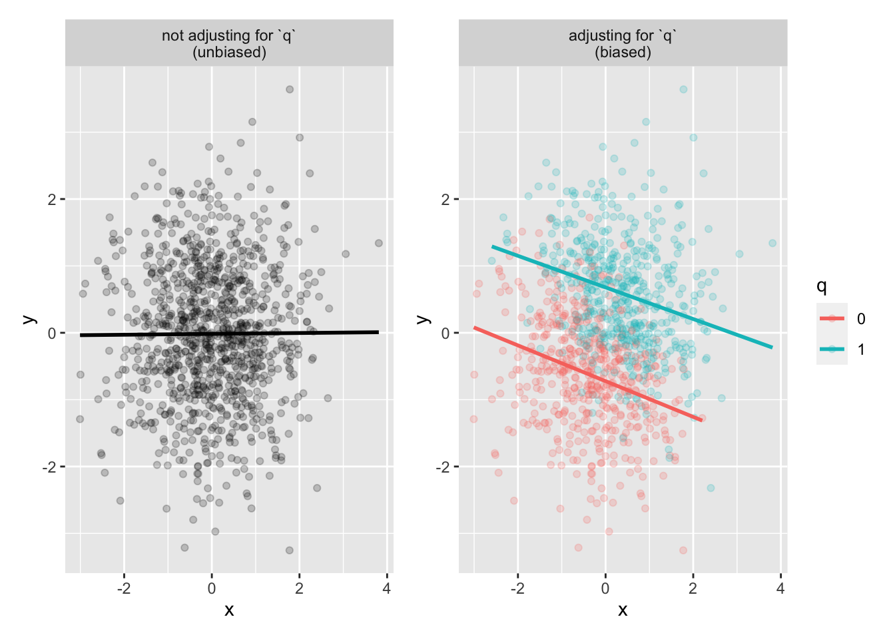

library(gtsummary)#BlackLivesMatterlibrary(patchwork)
library(correlation)Code adapted from r-causal (CH.5)
library(gtsummary)#BlackLivesMatterlibrary(patchwork)
library(correlation)
set.seed(123)
n <- 1000
q <- rbinom(n, size = 1, prob = .35)
x <- 2 * q + rnorm(n)
y <- -3 * q + rnorm(n)
confounder_data <- tibble(x, y, q = as.factor(q))p1 <- confounder_data |>
ggplot(aes(x, y)) +
geom_point(alpha = .2) +
geom_smooth(method = "lm", se = FALSE, color = "black") +
facet_wrap(~"not adjusting for `q`\n(biased)")
p2 <- confounder_data |>
ggplot(aes(x, y, color = q)) +
geom_point(alpha = .2) +
geom_smooth(method = "lm", se = FALSE) +
facet_wrap(~"adjusting for `q`\n(unbiased)")
p1 + p2
# Not Adjust
## y ~ x
confounder_data.fit.y_x <- lm(y ~ x, data = confounder_data)
## y ~ q
confounder_data.fit.y_q <- lm(y ~ q, data = confounder_data)
## x ~ q
confounder_data.fit.x_q <- lm(x ~ q, data = confounder_data)
# Adjusted: y ~ x + q
confounder_data.fit.y_xq <- lm(y ~ x + q, data = confounder_data)confounder_data.fit.tbls <-
list(
y_x = confounder_data.fit.y_x,
y_q = confounder_data.fit.y_q,
x_q = confounder_data.fit.x_q,
y_xq = confounder_data.fit.y_xq
) |>
map(tbl_regression_custom)
confounder_data.fit.tbls |>
tbl_merge(
tab_spanner = c("**y ~ x**", "**y ~ q**", "**x ~ q**", "**y ~ x + q**")
)| Characteristic | y ~ x | y ~ q | x ~ q | y ~ x + q | ||||||||
|---|---|---|---|---|---|---|---|---|---|---|---|---|
| Beta | 95% CI1 | p-value | Beta | 95% CI1 | p-value | Beta | 95% CI1 | p-value | Beta | 95% CI1 | p-value | |
| x | -0.70 | -0.77, -0.63 | <0.001 | 0.06 | 0.00, 0.12 | 0.059 | ||||||
| q | ||||||||||||
| 0 | — | — | — | — | — | — | ||||||
| 1 | -3.1 | -3.2, -3.0 | <0.001 | 1.9 | 1.8, 2.1 | <0.001 | -3.2 | -3.4, -3.0 | <0.001 | |||
| 1 CI = Confidence Interval | ||||||||||||
correlation(confounder_data)# Correlation Matrix (pearson-method)
Parameter1 | Parameter2 | r | 95% CI | t(998) | p
---------------------------------------------------------------------
x | y | -0.54 | [-0.58, -0.49] | -20.26 | < .001***
p-value adjustment method: Holm (1979)
Observations: 1000set.seed(123)
x <- rnorm(n)
linear_pred <- 2 * x + rnorm(n)
prob <- 1 / (1 + exp(-linear_pred))
q <- rbinom(n, size = 1, prob = prob)
y <- 2 * q + rnorm(n)
mediator_data <- tibble(x, y, q = as.factor(q))p1 <- mediator_data |>
ggplot(aes(x, y)) +
geom_point(alpha = .2) +
geom_smooth(method = "lm", se = FALSE, color = "black") +
facet_wrap(~"not adjusting for `q`\n(total effect)")
p2 <- mediator_data |>
ggplot(aes(x, y, color = q)) +
geom_point(alpha = .2) +
geom_smooth(method = "lm", se = FALSE) +
facet_wrap(~"adjusting for `q`\n(direct effect)")
p1 + p2
# Not Adjust
## y ~ x
mediator_data.fit.y_x <- lm(y ~ x, data = mediator_data)
## y ~ q
mediator_data.fit.y_q <- lm(y ~ q, data = mediator_data)
## x ~ q
mediator_data.fit.x_q <- lm(x ~ q, data = mediator_data)
# Adjusted: y ~ x + q
mediator_data.fit.y_xq <- lm(y ~ x + q, data = mediator_data)mediator_data.fit.tbls <-
list(
y_x = mediator_data.fit.y_x,
y_q = mediator_data.fit.y_q,
x_q = mediator_data.fit.x_q,
y_xq = mediator_data.fit.y_xq
) |>
map(tbl_regression_custom)
mediator_data.fit.tbls |>
tbl_merge(
tab_spanner = c("**y ~ x**", "**y ~ q**", "**x ~ q**", "**y ~ x + q**")
)| Characteristic | y ~ x | y ~ q | x ~ q | y ~ x + q | ||||||||
|---|---|---|---|---|---|---|---|---|---|---|---|---|
| Beta | 95% CI1 | p-value | Beta | 95% CI1 | p-value | Beta | 95% CI1 | p-value | Beta | 95% CI1 | p-value | |
| x | 0.57 | 0.49, 0.65 | <0.001 | -0.02 | -0.10, 0.06 | 0.622 | ||||||
| q | ||||||||||||
| 0 | — | — | — | — | — | — | ||||||
| 1 | 2.0 | 1.8, 2.1 | <0.001 | 1.2 | 1.1, 1.3 | <0.001 | 2.0 | 1.8, 2.1 | <0.001 | |||
| 1 CI = Confidence Interval | ||||||||||||
correlation(mediator_data)# Correlation Matrix (pearson-method)
Parameter1 | Parameter2 | r | 95% CI | t(998) | p
------------------------------------------------------------------
x | y | 0.41 | [0.35, 0.46] | 14.04 | < .001***
p-value adjustment method: Holm (1979)
Observations: 1000set.seed(1)
x <- rnorm(n)
y <- rnorm(n)
linear_pred <- 2 * x + 3 * y + rnorm(n)
prob <- 1 / (1 + exp(-linear_pred))
q <- rbinom(n, size = 1, prob = prob)
collider_data <- tibble(x, y, q = as.factor(q))p1 <- collider_data |>
ggplot(aes(x, y)) +
geom_point(alpha = .2) +
geom_smooth(method = "lm", se = FALSE, color = "black") +
facet_wrap(~"not adjusting for `q`\n(unbiased)")
p2 <- collider_data |>
ggplot(aes(x, y, color = q)) +
geom_point(alpha = .2) +
geom_smooth(method = "lm", se = FALSE) +
facet_wrap(~"adjusting for `q`\n(biased)")
p1 + p2
# Not Adjust
## y ~ x
collider_data.fit.y_x <- lm(y ~ x, data = collider_data)
## y ~ q
collider_data.fit.y_q <- lm(y ~ q, data = collider_data)
## x ~ q
collider_data.fit.x_q <- lm(x ~ q, data = collider_data)
# Bias: y ~ x + q
collider_data.fit.y_xq <- lm(y ~ x + q, data = collider_data)collider_data.fit.tbls <-
list(
y_x = collider_data.fit.y_x,
y_q = collider_data.fit.y_q,
x_q = collider_data.fit.x_q,
y_xq = collider_data.fit.y_xq
) |>
map(tbl_regression_custom)
collider_data.fit.tbls |>
tbl_merge(
tab_spanner = c("**y ~ x**", "**y ~ q**", "**x ~ q**", "**Bias: y ~ x + q**")
)| Characteristic | y ~ x | y ~ q | x ~ q | Bias: y ~ x + q | ||||||||
|---|---|---|---|---|---|---|---|---|---|---|---|---|
| Beta | 95% CI1 | p-value | Beta | 95% CI1 | p-value | Beta | 95% CI1 | p-value | Beta | 95% CI1 | p-value | |
| x | 0.01 | -0.06, 0.07 | 0.840 | -0.25 | -0.30, -0.20 | <0.001 | ||||||
| q | ||||||||||||
| 0 | — | — | — | — | — | — | ||||||
| 1 | 1.2 | 1.1, 1.3 | <0.001 | 0.79 | 0.67, 0.91 | <0.001 | 1.4 | 1.3, 1.5 | <0.001 | |||
| 1 CI = Confidence Interval | ||||||||||||
correlation(collider_data)# Correlation Matrix (pearson-method)
Parameter1 | Parameter2 | r | 95% CI | t(998) | p
-------------------------------------------------------------------
x | y | 6.40e-03 | [-0.06, 0.07] | 0.20 | 0.840
p-value adjustment method: Holm (1979)
Observations: 1000